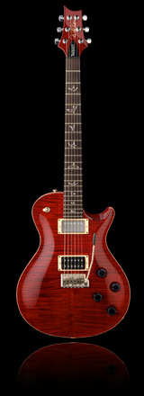

Mark Tremonti is considered to be one of rock’s leading guitarists. As the guitarist of Alter Bridge and formerly of Creed, he has met extraordinary success and continues to grow as both a guitar player and songwriter. While Creed was on tour in support of their first record, My Own Prison, Mark was contacted by PRS and asked if he would like to try one of their guitars.
"I jumped at the idea to play one of PRS’ guitars. PRS was one of those guitars that I could never afford in high school or college and had always wanted to play one." PRS sent Mark a McCarty model which he instantly fell in love with. He played that guitar exclusively for a while, but ultimately wanted a guitar that was more suited to his playing style.
Mark Tremonti began to collaborate with PRS on his dream guitar that would soon become the Mark Tremonti Signature Model. He needed pickups that were a little more aggressive and could complement his rhythm playing which contains a lot of palm muting. The neck of the guitar needed to accommodate his style, influenced by thrash metal, shred, and traditional blues. PRS met these needs with the Tremonti wide-thin neck carve.